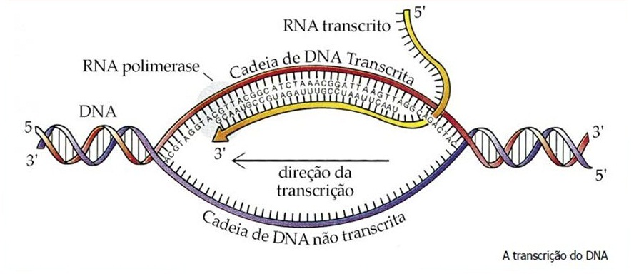
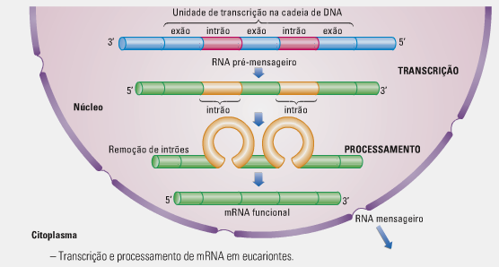
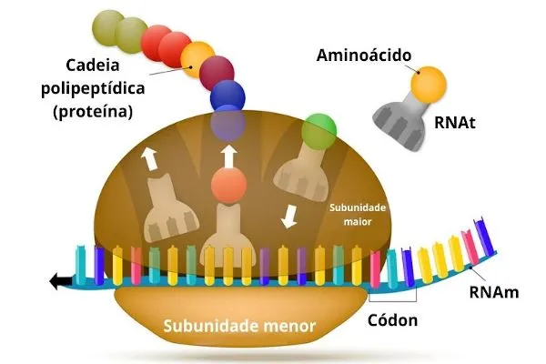
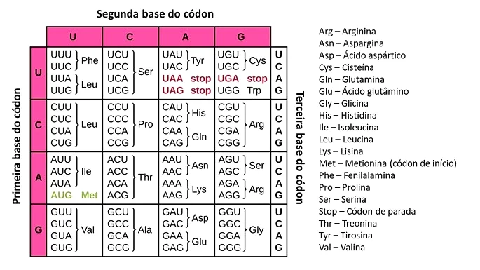

Informação Genética
É armazenada e transportada pelos ácidos nucleicos.
É responsável pela produção, organização e interação entre a matéria que constitui um ser vivo.
Sem ela, a célula não consegue realizar os seus diversos processos, por isso, uma célula sem ácidos
nucleicos apenas sobrevive até a informação genética fornecida ao seu citoplasma se esgotar.
Genes
São sequências específicas de nucleótidos nas quais a informação genética organiza-se.
Estas unidades de informação são responsáveis pelas características manifestadas por cada indivíduo.
Cada gene de um indivíduo é responsável pela produção de uma proteína específica,
ou pela realização de uma outra tarefa dentro da célula.
Genoma
É o conjunto de genes que existe num indivíduo.
É toda a informação genética presente nesse indivíduo.
Transcrição do DNA
É um processo necessário à síntese de proteínas em que o DNA serve de molde para uma molécula de RNA,
a qual formarse-à por complementaridade com a cadeia de DNA, transportando a informação genética nela contida.

Este processo ocorre no núcleo da célula, no caso dos seres eucariontes,
ou no citoplasma da célula, no caso dos seres procariontes.
Inicia-se com a ligação de uma enzima chamada RNA polimerase a um segmento específico do DNA, chamdo de promotor.
A RNA polimerase desenrola a molécula de DNA e usa uma das cadeias como molde para a síntese do mRNA.
Neste processo, são utilizados ribonucleótidos como substrato, originado energia pela remoção dos seus dois grupos
fosfato, a qual será utilizada para estabelecer ligações entre os nucleótido que irão constituir a cadeia de RNA.
A transcrição ocorre no sentido 5'→3' e termina quando a RNA polimerase encontra um segmento de finalização do DNA,
desprendendo-se a si e à cadeia de RNA formada da molécula de DNA, a qual volta a enrolar-se.
Processamento do RNA
É um processo exclusivo das células eucariontes, durante o qual o RNA transcrito será processado,
dentro do núcleo, para que os seus intrôes, que são informação genética sem utilidade,
sejam retirados, permanecendo apenas os exões, que são informação genética útil, os quais se ligam uns aos outros.

Antes de sofrer este processo, o RNA denomina-se pré-mensageiro, sendo apenas mensageiro depois de passar por ele.
Este processo indica que a informação necessária à síntese de proteínas encontra-se disposta de forma
fragmentada ao longo do DNA.
No fim o RNA é apenas constituído pelas sequências que codificam os aminoácidos
de uma determinada proteína e passa do núcleo para o citoplasma.
Tradução do RNA
É um processo no qual a informação contida no RNA é utilizada para a síntese de proteínas.

Este processo ocorre no citoplasma da célula, mais especificamente nos ribossomas,
tanto no caso da célula ser eucarionte quanto no caso de ser procarionte.
É um processo que permite a descodificação do mRNA de forma a sintetizar um péptido.
Divide-se em três etapas:
Iniciação: A subunidade menor do ribossoma(parte de baixo) liga-se ao mRNA
e avança até encontrar o codão de iniciação, um tRNA que transporta metionina liga-se ao codão de iniciação, e,
por fim, a subunidade maior do ribossoma(parte de cima) liga-se à menor.
Alongamento: Um segundo tRNA que transporta um aminoácido liga-se ao seguinte codão,
uma enzima na subunidade maior catalisa a união dos aminoácidos dos tRNA, o tRNA que se ligou primeiro desprende-se,
dando espaço para que o próximo se ligue e o ciclo se repita.
Finalização: Quando o ribossoma atinge um codão de finalização, uma proteína chamada fator de terminação
liga-se a ele, quebra a ligação entre o tRNA lá presente e o péptido formado e causa a separação das subunidades do ribossoma,
libertando as moléculas a ele ligado.
Para além das molécula já referidas, envolve várias outras e, sendo um processo anabólico, ocorre consumo de energia.
Dogma Central
O dogma central da biologia molecular é a capacidade do DNA de ser transcrito em RNA,
o qual será posteriormente traduzido nos ribossomas para sintetizar polipéptidos.
Código Genético
É a relação entre os tripletos(codões) do mRNA e os aminoácidos a que correspondem,
sendo cada codão formado por três nucleótidos consecutivos.
Diferentes combinações de codões são responsáveis pela codificação de diferentes aminoácidos.

As principais características do código genético são:
- O tripleto AUG ter duas funções: codificar o aminoácido metionina e servir como codão de iniciação.
- É redundante, ou seja, existe mais que um codão para codificar um aminoácido,
sendo este fenómeno conhecido como degenerescência do código genético.
- O terceiro nucleótido de um codão é menos específico que os dois primeiros,
ou seja a sua alteração nem sempre resulta na alteração do aminoácido codificado.
- Não é ambíguo, ou seja, um codão não codifica mais que um aminoácido.
- É universal, ou seja, aplica-se à maioria dos organismos.
Mutações
São alterações permanentes do material genético.
Quando afetam um determinado gene, dizem-se mutações génicas.
Podem ocorrer espontaneamente durante o processo de replicação do DNA, ou serem causadas por agentes mutagénicos,
como radiações de elevado nível energético, partículas emitidas por substâncias radioativas,
ou algumas substâncias químicas.
Mutações Génicas
Podem resultar da substituição, da remoção ou da adição de nucleótidos na sequência que constitui o gene.
Se uma mutação génica não afeta a função da proteína produzida pelo gene modificado,
diz-se ser uma mutação silenciosa.
Se uma mutação génica compromete a função da proteína produzida pelo gene modificado,
diz-se ser uma mutação com perda de função.
Se uma mutação génica dá uma nova função à proteína produzida pelo gene modificado,
diz-se ser uma mutação com ganho de função.